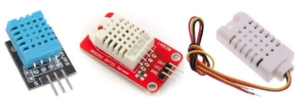
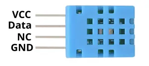
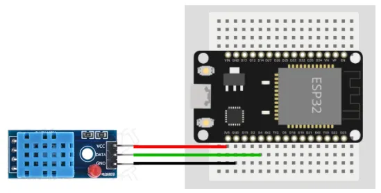
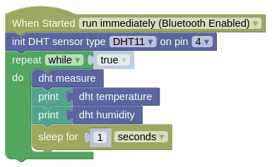

Temperature and Humidity (DHT11, DHT22, AM2302)

The DHT11 is a low cost temperature and humidity sensor. The DHT22 is an improved version with a larger detection range and better accuracy. The AM2302 is the wired version of the DHT22.
Pins

| Pin | Description |
|---|---|
| VCC / + (Red) | Power for the sensor. Connect to 3V3. |
| GND / - (Black) | Ground pin. This should be connected to the GND pin on the ESP32. |
| OUT / DATA (Yellow) | Data. This should be connected to an output capable pin on the ESP32. |
| NC | Not Connected. Don't connect this to anything. |
This sensor is often sold mounted on a breakout board with only 3 pins (NC is not exposed). The order of the pins on such boards varies, so you'll need to refer to the labels.
Wiring

The above image shows a DHT11 with breakout board, but the wiring is the same for all DHT11, DHT22, and AM2302 devices.
Note that the order of the pins may vary.
Code
This code will display the temperature and humidity once every second.
Blocks

If you are using a DHT22 or AM2302, you'll need to set the sensor type accordingly in the "init" block.
Python
import dht
import machine
import time
dht_device = dht.DHT11(machine.Pin(4))
# Replace the above with the next line if you have a DHT22 or AM2302
# dht_device = dht.DHT22(machine.Pin(4))
while True:
try:
dht_device.measure()
except:
pass
print(dht_device.temperature())
print(dht_device.humidity())
time.sleep(1)
"measure" may sometimes result in an error, especially if you're reading too fast.
Without the try except, the error will cause your program to terminate.
Results
You should see the temperature (Celsius) and relative humidity (percentage) printed in the monitor once every second.
class DHT22 - control DHT11, DHT22, and AM2302 Temperature and Humidity Sensors
Constructors
dht.DHT11(pin)
Creates a DHT11 object.
The arguments are:
pinA micropython Pin object.
Returns a DHT11 object.
dht.DHT22(pin)
Creates a DHT22 object.
The arguments are:
pinA micropython Pin object.
Returns a DHT22 object.
Methods
DHT11.measure() / DHT22.measure()
Performs a temperature and humidity measurement. This should not be performed more than once every second.
Returns None.
DHT11.temperature() / DHT22.temperature()
Returns the temperature measured during the last measure().
Returns a float representing the temperature in Celsius.
DHT11.humidity() / DHT11.humidity()
Returns the humidity measured during the last measure().
Returns a float representing the relative humidity in percentage.